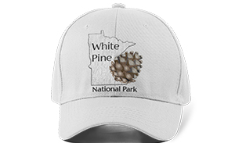

White Pine National Park
Website Design, UX / UI
Project Overview
This site was the product of a team effort. We were asked to develop and present a Request for Proposal (RFP) for a website design project. Each group picked an assignment based on their chosen RFP. From there, we collaborated to create wireframes and then independently developed a website.
Our client was The National Parks Service (NPS). We were given the timeframe of four months to
determine our methodology, conduct research, and ultimately develop the new website.
My role was;
- User research & analysis
- Logo design
- Style Guide
- UI Design
- Wireframes
- Coding the site
This site was coded utilizing Bootstrap (HTML) and the look and feel was further stylized with customized CSS. The pages that have not yet been completed are disabled to augment the user experience. It is hosted on GitHub, a web-based hosting service that allows for version control.
Research
Personas
The request for proposal defined some typical users, outlined their age, occupation, marital or lifestyle status, national park needs, and technology usage, including some of their goals in using the website.
We referred to them throughout the entire product development process. Reviewing this information especially informed the information that ultimately ended up on the home page.
Style Guide
Logo Development
In viewing the original logo of a pine tree, I began to think that I wanted to communicate something more symbolic.
Through research, I learned that the pinecone is the most ancient plant genera on the planet, having existed nearly three times longer than all flowering plant species. It felt like a perfect representation of the timeless experience of wandering in the woods of a Minnesota National Park. It also became the favicon for the website.
Playing with the circle from the original logo, I tried some open block fonts, which proved to be hard to read.
I ended up chosing a solid, more visible sans serif font called Florentia Regular. Eventually, I created an outline of the State of Minnesota to provide a lovely canvas for the Acorn to rest on. I used the circular logo as a secondary option for the footer.

Logo Application
The request for proposal defined some typical users, outlined their age, occupation, marital or lifestyle status, national park needs, and technology usage, including some of their goals in using the website.
We referred to them throughout the entire product development process. Reviewing this information especially informed the information that ultimately ended up on the home page.

UI | UX Design
Mood Board
As a first part of the UI design process, I created a mood board, outlining the look & feel I wanted to create based on the wireframes we built. This was extremely beneficial in deciding on the color palette of the website.
Site Map
As a first part of the UI design process, I created a mood board, outlining the look & feel I wanted to create based on the wireframes we built. This was extremely beneficial in deciding on the color palette of the website.
Medium Fidelity Wireframes
At the beginning of the design process we collaboratively created medium fidelity wireframes using InVision, a cloud-based collaborative design board. This was a useful process because it made us think through a park user's experience and ultimately helped us determine what items needed to be grouped together and on which pages. We had a few iterations before we ultimately arrived at something that felt intuitive. Eventually, we all independently coded individual websites based on these wireframes.